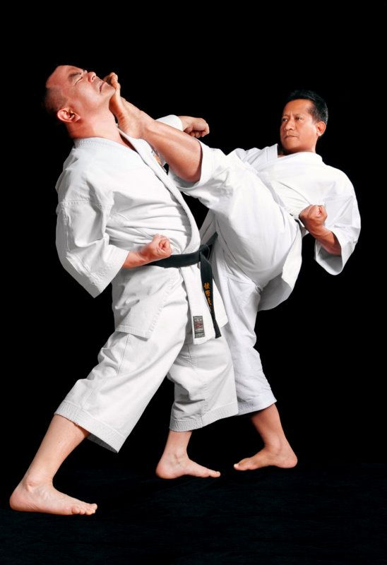
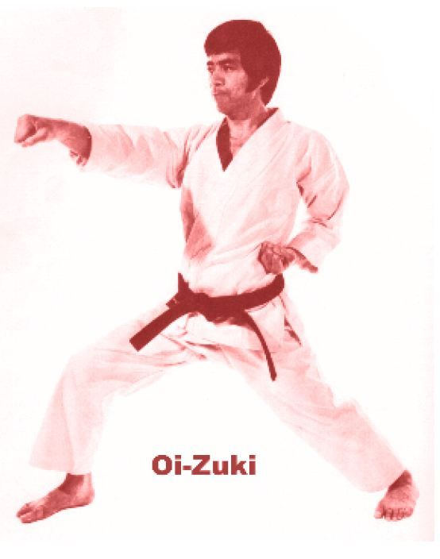
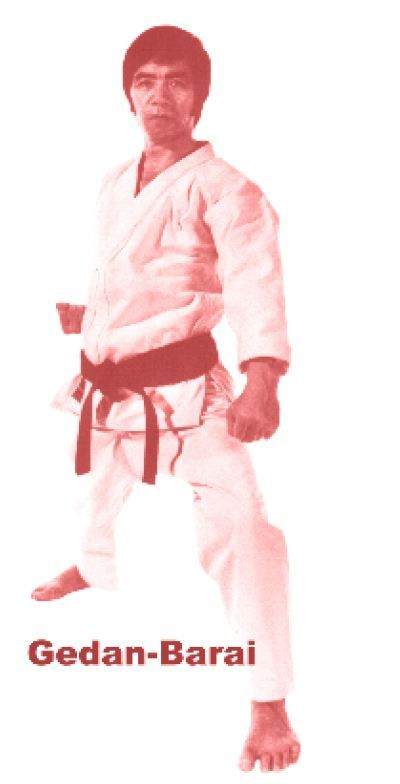
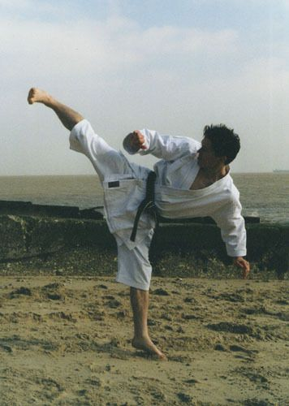
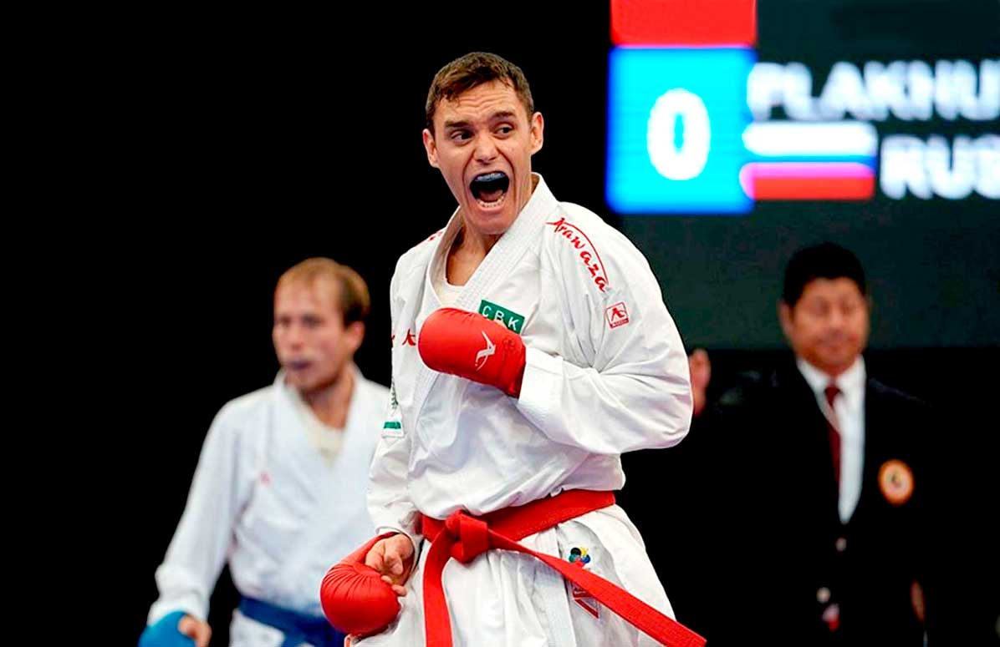
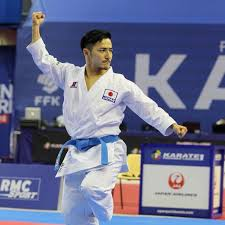

DISCIPLINA . RESPEITO . EVOLUÇÃO
KARATE SHOTOKAN
Uma arte marcial tradicional que desenvolve corpo, mente e espírito. Forjada na disciplina, guiada pelo respeito.
ORIGEM E TRADIÇÃO
A história do Shotokan
O karatê Shotokan é uma arte marcial tradicional japonesa fundada por Gichin Funakoshi. Funakoshi nasceu em Okinawa em 1868 e começou a treinar artes marciais tradicionais de Okinawa ainda jovem. Tornou-se um praticante habilidoso e, eventualmente, mudou-se para o Japão para difundir os ensinamentos do karatê.
A filosofia de Funakoshi sobre o karatê enfatizava o desenvolvimento integral do indivíduo, incluindo os aspectos físicos, mentais e espirituais do treinamento. Ele acreditava que o karatê não era apenas uma forma de luta, mas um estilo de vida. Em 1922, Funakoshi demonstrou suas habilidades em karatê na primeira exibição atlética nacional em Tóquio, o que contribuiu para a popularização da arte marcial no Japão.
Em 1936, Funakoshi fundou o primeiro dojo de karatê Shotokan em Tóquio. O nome "Shotokan" foi escolhido em homenagem ao pseudônimo de Funakoshi, Shoto, que significa "pinheiros ondulantes". O dojo rapidamente se tornou popular e atraiu muitos alunos, incluindo vários membros de alta patente das forças armadas japonesas.
Em 1939, Funakoshi publicou seu livro "Karate-Do: Meu Modo de Vida", que delineava sua filosofia e os princípios do Karate Shotokan. O livro tornou-se um clássico no campo das artes marciais e ainda hoje é amplamente lido e respeitado
Funakoshi continuou a ensinar e promover o Karatê Shotokan até sua morte em 1957. Hoje, seu legado permanece vivo através dos muitos praticantes e organizações ao redor do mundo que continuam a estudar e ensinar a arte marcial. O Karatê Shotokan teve um impacto profundo na vida de inúmeras pessoas, que foram inspiradas pelos ensinamentos de Funakoshi e pela história dessa rica e vibrante arte marcial
TÉCNICA E PRECISÃO
Golpes Fundamentais
A base do Shotokan é construída por golpes diretos, chutes poderosos e defesas firmes.
Mae Geri

Chute frontal
Oi Zuki

Soco direto
Gedan Barai

Defesa baixa
Yoko Geri

Chute lateral
FORMA E FLUIDEZ
Katas
Katas são sequências de movimentos que simulam combate contra múltiplos oponentes.
- HEIAN SHODAN
- TEKKI SHODAN
- UNSU
INSPIRAÇÕES
Atletas em Destaque
Conheça alguns atletas que levaram o Shotokan aos mais altos níveis.

Douglas Brose
3x Campeão Mundial - Kumite -60kg

Kazumasa Moto
1x Campeão Mundial - Kata